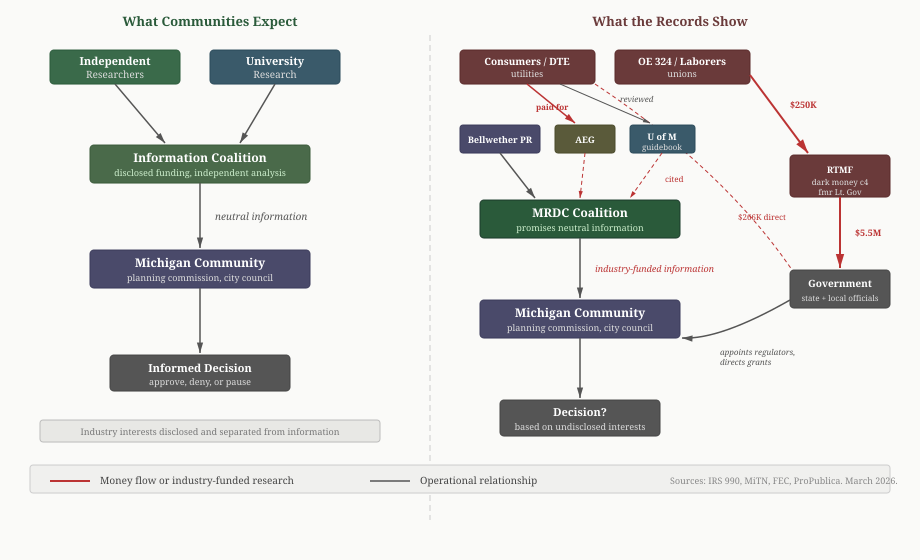

Can Michigan Communities Trust the Data Center Coalition's "Independent" Information?
LANSING, Mich. — Since late 2025, more than 25 Michigan communities have hit pause on data center approvals. Most local planning commissions have never dealt with the utility contracts, industrial rezoning, and environmental questions these projects raise, and they are looking for trustworthy guidance. Michigan for Responsible Data Centers, a 17-member coalition that launched March 19, says it can help.
A previous analysis found that a PR firm representing a data center developer manages the coalition's website, and that the economic research it cites was commissioned by Consumers Energy, one of its own coalition members. Campaign finance records and IRS filings show something else: several of the same organizations behind the coalition also fund the political campaigns of the officials who vote on data center approvals, in some cases through nonprofit intermediaries that do not publicly disclose their donors.
The 2022 election cycle offers the clearest picture because it generated the most filings across the most entities. The spending patterns described below are not unique to that year. IRS filings for the same organizations show similar activity in every year on record, though with smaller dollar amounts outside the gubernatorial election cycle.
A Coalition Member's $250,000 Grant
In fiscal year 2022, Operating Engineers Local 324, a building trades union and MRDC coalition member, granted $250,000 to an organization called Road to Michigan's Future. The grant is listed on OE 324's IRS Form 990 (EIN 38-2872986), Schedule I, as "General Purpose/Outreach." What happened to that money shows how funds can move from a coalition member to political campaigns without public disclosure.
RTMF does not appear in any MRDC materials. It has no website and no public staff listing. Its LARA filing (entity 802404771) lists The Corporation Company as registered agent, a commercial service that handles state filings on behalf of clients who prefer not to appear on public records themselves. The articles of incorporation, filed January 15, 2020, name Richard Wiener as the incorporator. Wiener is a Williamston attorney (Michigan State Bar P26618, admitted 1976) who served as chief operating officer of the Michigan Democratic Party.
IRS 990 filings identify three officers, the same names on every filing from 2020 through 2024: Wiener as president, former Lieutenant Governor John D. Cherry Jr. (2003-2011) as treasurer, and former State Representative Robert Emerson (2002-2008) as secretary. All three serve without pay at two hours per week. A paid staff of 18 handles operations, led by Strategic Director Amanda Stitt at $240,000 per year. The organization has taken in $38 million over five years.
Where the Money Went in 2022
RTMF's 2022 filing shows $12.9 million in revenue and $19.2 million in expenses. It burned through $6.3 million in reserves accumulated from prior years. Schedule I and IRS 8872 records show the major recipients:
| Recipient | Amount | Source |
|---|---|---|
| America Works USA (1225 Eye St NW, Washington, DC) | $11,250,000 | 990 Schedule I |
| Put Michigan First | $5,500,000 | IRS 8872 |
| 21st Century Fund (606 Townsend St, Lansing) | $1,000,000 | 990 Schedule C |
| Keep Michigan Safe | $865,000 | MiTN |
The address for America Works USA is the same as the Democratic Governors Association.
Put Michigan First was a 527 political organization that spent $38.9 million on the 2022 election, according to the ProPublica 527 Explorer. Most of it went to television advertising supporting Governor Whitmer's reelection and opposing Republican challenger Tudor Dixon. RTMF's $5.5 million made it the second-largest donor, behind only the DGA itself at $14.1 million. Bloomberg contributed $2 million. The Super PAC filed its final report in December 2022.
Other Channels
OE 324 also sent $128,904 to Put Michigan First through federal channels (FEC Schedule B, committee C00093989). Scott Hart, the union's chief financial officer, signed the 990 filings for all three OE 324 tax-exempt entities. He is also the treasurer of Policy Over Party, a Super PAC that has spent $2.9 million on Michigan campaigns.
Michigan Laborers District Council, which shares an address and interests with the building trades unions in the MRDC coalition, contributed $500,000 directly to Put Michigan First in two payments during October 2022 (IRS 8872 records).
Four MRDC coalition members also appear as direct contributors to Whitmer's campaign committee (MiTN Committee 518014) in state records:
| Coalition Member | Amount | Period |
|---|---|---|
| Operating Engineers Local 324 PAC | $140,250 | 2013-2022 |
| Michigan Laborers Political League | $71,500 | 2022 |
| Consumers Energy | $46,000+ | 2020-2022 |
| DTE Energy PAC | $9,000+ | 2005-2013 |
Consumers Energy separately operates a $43 million political spending arm, the Consumers Energy Michigan Excellence PAC, which does not disclose its recipients.
What a Local Official Would See

None of this appears on the MRDC website. A planning commissioner downloading an MRDC resource or a council member citing the coalition's economic numbers in a hearing would encounter a site with 17 member logos, a promise of factual information, and no names, no financial disclosures, and no indication that the coalition's members have collectively spent millions of dollars supporting the officials who shape data center policy at both the state and local level.
RTMF's donor identities are restricted on all five years of its IRS filings. As a 501(c)(4), it is not required to disclose them. The $250,000 from OE 324 is known only because the union reported the grant on its own 990. The sources of the other $37.5 million in RTMF revenue have not been publicly disclosed.
Methodology
This analysis draws on publicly available records: Michigan campaign finance data from MiTN, IRS Form 990 filings from ProPublica Nonprofit Explorer, IRS Form 8872 political organization disclosures, FEC disbursement records, LARA business registry filings, the ProPublica 527 Explorer, and publicly available board rosters. All sources were accessed in March 2026.